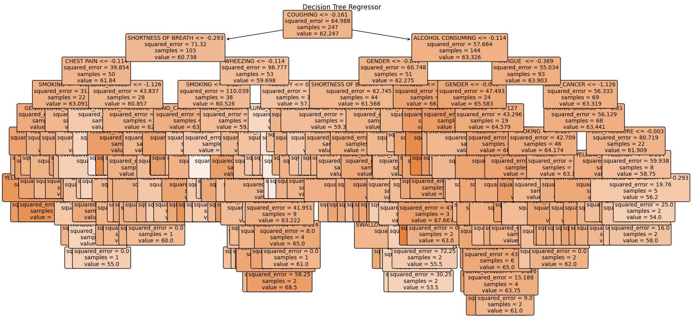
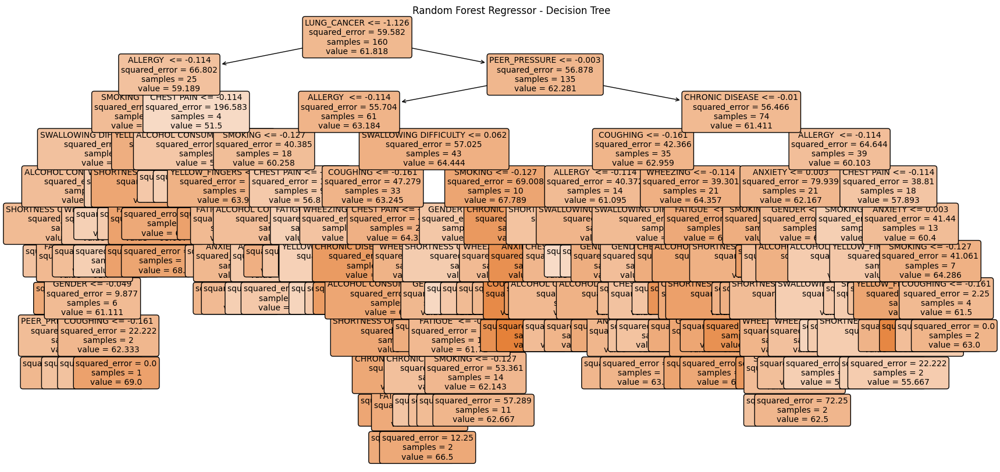

A decision tree is a flowchart-like structure where each internal node represents a feature (or attribute), the branch represents a decision rule, and each leaf node represents the outcome. The model splits the dataset into smaller subsets while at the same time developing an associated decision tree incrementally.
A random forest is an ensemble learning method that combines multiple decision trees to improve the overall performance. Each tree is trained on a random subset of the data, and the final prediction is made by averaging the predictions of all individual trees. This method reduces the risk of overfitting and improves accuracy.
A support vector machine (SVM) is a supervised learning model that finds the optimal hyperplane to classify data points in a high-dimensional space. SVMs are effective in high-dimensional spaces and are versatile with different kernel functions for nonlinear classification.
The following SVM implementation uses a grid search with cross-validation to find the best hyperparameters:
from sklearn.svm import SVC
from sklearn.model_selection import GridSearchCV, StratifiedKFold
param_grid = {
'C': [0.1, 1, 10, 100, 1000],
'gamma': [1, 0.1, 0.01, 0.001, 0.0001],
'kernel': ['linear', 'poly', 'rbf', 'sigmoid']
}
cv = StratifiedKFold(n_splits=10, shuffle=True, random_state=42)
grid_search = GridSearchCV(SVC(), param_grid, cv=cv, scoring='accuracy', verbose=2, n_jobs=-1)
grid_search.fit(X_train, y_train)
best_svc = grid_search.best_estimator_
y_pred_best = best_svc.predict(X_test)The SVM model provided the following results:
Classification Report:
precision recall f1-score support
0 0.71 0.62 0.67 8
1 0.95 0.96 0.95 54
accuracy 0.92 62
macro avg 0.83 0.79 0.81 62
weighted avg 0.92 0.92 0.92 62
Confusion Matrix:
[[ 5 3]
[ 2 52]]The classification report shows the precision, recall, and f1-score for each class:
The confusion matrix provides a detailed breakdown of the true positive, false positive, true negative, and false negative predictions: